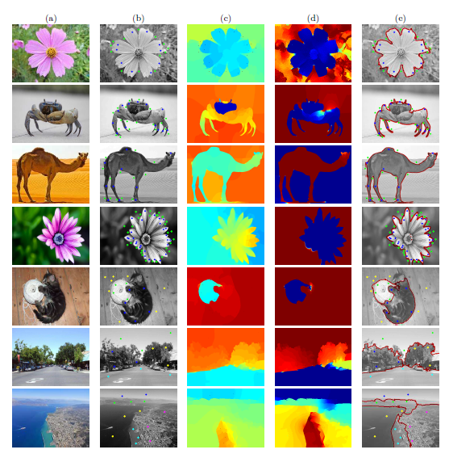

FAST-GE-2.0 provides theoretical and computational solutions to the optimizationg problem:
\begin{equation}\label{eq:rq} \inf_{\substack{x\in \mathbb{R}^{n}\\ x^T L_H x > 0}} \frac{x^T L_G x}{x^T L_H x}, \end{equation}
where \(L_G\) and \(L_H\) are symmetric positive semi-definite and the pencil \(L_G - \lambda L_H\) is singular, i.e., \(\det(L_G - \lambda L_H)\equiv 0\) for all \(\lambda\).
Theoretically, the Courant-Fischer variational principle is generalized to the singular pencil \(L_G - \lambda L_H\), which proves that the infimum of the Rayleigh quotient \eqref{eq:rq} is obtainable. Problem \eqref{eq:rq} is subsequently converted into:
\begin{equation}\label{eq:eigLGLH} L_Gx=\lambda L_H x. \end{equation}
Computationally, a spectral regularization is used to transform the singular pencil \(L_G - \lambda L_H\) into a positive definite pencil \(K - \sigma M\) where \(K\) and \(M\) are symmetric and \(M\) is positive definite. Specifically,
\begin{equation}\label{eq:GHnew} K=-L_H \quad \mbox{and} \quad M= L_G +\mu L_H + ZSZ^T, \end{equation}
where \(Z \in \mathbb{R}^{n \times s}\) is an orthonormal basis of the common nullspace of \(L_G\) and \(L_H\). \(S\in \mathbb{R}^{s\times s}\) is an arbitrary positive definite matrix, and \(\mu\) is a positive scalar. Problem \eqref{eq:eigLGLH} is finally converted into the generalized symmetric definite eigenproblem:
\begin{equation}\label{eq:eigKM} K x = \sigma M x. \end{equation}

Robust and efficient computation of eigenvectors in a generalized spectral method for constrained clustering.
Chengming Jiang, Huiqing Xie and Zhaojun Bai.
Accepted at the 20th International Conference on Artificial Intelligence and Statistics (AISTATS 2017), 2017.
(preprint)